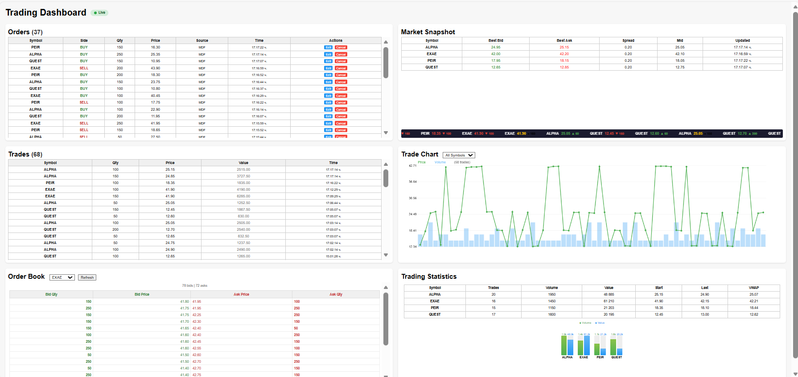

Complete User & Technical Guide v1.0
StockEx is a comprehensive real-time trading simulation platform inspired by Euronext OPTIQ. It provides a complete electronic trading ecosystem including order entry, matching engine, market data distribution, and live visualization.
http://localhost:5005http://localhost:5000localhost:5001http://localhost:6000

StockEx Trading Dashboard - Real-time Market View
Port 2181
Apache Zookeeper provides distributed coordination for the Kafka cluster. It manages broker metadata, topic configurations, and cluster membership.
| Function | Kafka cluster coordination |
|---|---|
| Technology | Confluent Zookeeper 7.5.0 |
| Dependencies | None |
Port 9092 Port 29092 (host)
Apache Kafka serves as the central message backbone for the entire system. All order flow, trade executions, and market data are distributed through Kafka topics.
| Function | Message streaming and event distribution |
|---|---|
| Technology | Confluent Kafka 7.5.0 |
| Topics | orders, trades, snapshots |
| Dependencies | Zookeeper |
Port 5001
The FIX OEG is a QuickFIX/Python acceptor that receives orders via FIX 4.4 protocol from institutional clients. It validates incoming messages, normalizes them to JSON format, and publishes to the Kafka orders topic.
| Function | FIX protocol order reception and normalization |
|---|---|
| Technology | QuickFIX/Python |
| Protocol | FIX 4.4 |
| Message Types | NewOrderSingle (D), OrderCancelRequest (F), OrderCancelReplaceRequest (G) |
| Output | Kafka orders topic |
Port 5002 (Client 1) Port 5003 (Client 2)
Web-based FIX initiator clients that connect to the FIX OEG. They provide a user interface for submitting orders via FIX protocol, simulating institutional trading terminals.
| Function | FIX order submission interface |
|---|---|
| Technology | QuickFIX/Python + Flask |
| Features | New Order, Cancel, Amend |
| Connection | FIX 4.4 to FIX OEG |
Port 6000
The core matching engine that maintains order books for all securities. It consumes orders from Kafka, attempts to match them using price-time priority, and publishes resulting trades. Provides REST API for order book and trade queries.
| Function | Order matching, trade execution, order book management |
|---|---|
| Technology | Python/Flask with SQLite persistence |
| Algorithm | Price-Time Priority (FIFO) |
| Input | Kafka orders topic |
| Output | Kafka trades topic |
| API Endpoints | /orderbook/<symbol>, /trades, /health |
Internal
Simulates market data by generating random orders and publishing Best Bid/Offer (BBO) snapshots. Creates realistic market activity with configurable order rates and price movements.
| Function | Market simulation and BBO publishing |
|---|---|
| Technology | Python |
| Output | Kafka orders and snapshots topics |
| Order Mix | 90% passive (book building), 10% aggressive (trades) |
| Rate | Configurable (default: 8 orders/minute) |
Port 5005
Real-time web dashboard providing comprehensive market visualization. Uses Server-Sent Events (SSE) for live streaming updates without page refresh. Displays orders, trades, market snapshots, order book depth, and trading statistics.
| Function | Real-time market visualization and order management |
|---|---|
| Technology | Python/Flask + JavaScript |
| Streaming | Server-Sent Events (SSE) |
| Input | Kafka topics + Matcher REST API |
| Features | Orders, Trades, BBO, Order Book, Charts, Statistics |
Port 5000
Simple web interface for manual order submission. Allows users to enter orders directly without FIX protocol, useful for testing and demonstration.
| Function | Manual order entry interface |
|---|---|
| Technology | Python/Flask |
| Output | Kafka orders topic |
Internal
Debug utility that consumes and logs messages from Kafka topics. Useful for monitoring message flow and troubleshooting.
Internal
Utility service that subscribes to the snapshots topic and logs BBO updates. Writes to log files for analysis.
Displays real-time incoming orders with full management capabilities.
| Column | Description |
|---|---|
| Symbol | Stock ticker (ALPHA, EXAE, PEIR, QUEST) |
| Side | BUY (green) or SELL (red) |
| Qty | Order quantity in shares |
| Price | Limit price |
| Source | Order origin (MDF, FIX, Manual) |
| Time | Order timestamp |
| Actions | Edit / Cancel buttons |
Row Selection: Click any row to select, then use header buttons for bulk actions.
Shows Best Bid/Offer (BBO) for all securities with real-time updates.
| Column | Description |
|---|---|
| Symbol | Security identifier |
| Best Bid | Highest buy price (green) |
| Best Ask | Lowest sell price (red) |
| Spread | Ask - Bid difference |
| Mid | Midpoint: (Bid + Ask) / 2 |
| Updated | Last update timestamp |
Ticker Tape: Scrolling bar at bottom displays recent trades with price direction (▲ green up, ▼ red down).
Lists all executed trades with calculated values.
| Column | Description |
|---|---|
| Symbol | Traded security |
| Qty | Executed quantity |
| Price | Execution price |
| Value | Trade value (Qty × Price) |
| Time | Execution timestamp |
Displays full market depth for selected symbol.
Visual representation of trade activity over time.
Aggregated metrics calculated from all trades.
| Metric | Description |
|---|---|
| Trades | Number of executed trades |
| Volume | Total shares traded |
| Value | Total monetary value (Σ Qty × Price) |
| Start | First trade price (opening) |
| Last | Most recent trade price |
| VWAP | Volume-Weighted Average Price |
Bar Charts: Visual comparison showing Volume and Value per symbol side by side.
| Topic | Producers | Consumers | Content |
|---|---|---|---|
orders | FIX OEG, MDF, Frontend | Matcher, Dashboard | New orders, cancels, amends |
trades | Matcher | Dashboard, Consumer | Executed trades |
snapshots | MDF | Dashboard, Snapshot Viewer | BBO updates |
| Variable | Default | Description |
|---|---|---|
KAFKA_BOOTSTRAP | kafka:9092 | Kafka broker address |
MATCHER_URL | http://matcher:6000 | Matcher API endpoint |
TICK_SIZE | 0.05 | Minimum price increment |
ORDERS_PER_MIN | 8 | MDF order generation rate |
SECURITIES_FILE | /app/data/securities.txt | Securities configuration |
| Symbol | Start Price | Description |
|---|---|---|
| ALPHA | 25.00 | Test Security A |
| EXAE | 42.00 | Test Security B |
| PEIR | 18.50 | Test Security C |
| QUEST | 12.75 | Test Security D |
docker compose up --build
| Service | URL | Purpose |
|---|---|---|
| Dashboard | http://localhost:5005 | Main trading view |
| Frontend | http://localhost:5000 | Manual order entry |
| FIX Client 1 | http://localhost:5002 | FIX order submission |
| FIX Client 2 | http://localhost:5003 | FIX order submission |
| Matcher API | http://localhost:6000 | REST API |
| Action | How To |
|---|---|
| View order book depth | Select symbol from Order Book dropdown |
| Edit an order | Click Edit button on order row |
| Cancel an order | Click Cancel button on order row |
| Filter trade chart | Select symbol from Trade Chart dropdown |
| Pause ticker tape | Hover mouse over the ticker |
| Select multiple orders | Click rows, use header Edit/Cancel buttons |
| Status | Indicator | Meaning |
|---|---|---|
| Live | ● Green | Connected to real-time stream |
| Connecting | ● Yellow | Establishing connection |
| Disconnected | ● Red | Connection lost, auto-reconnecting |